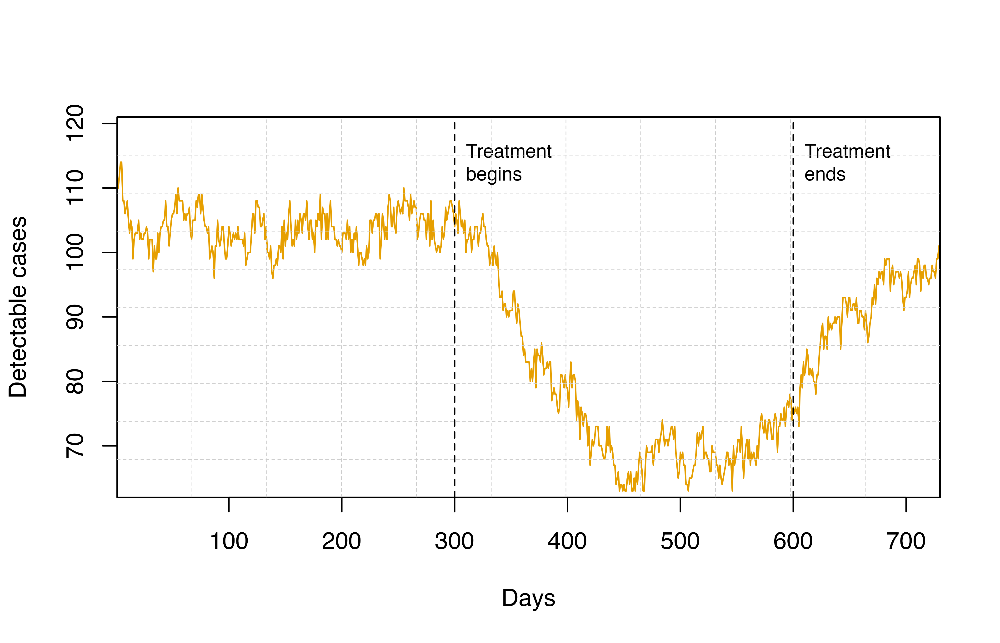

Treatment.RmdsuppressPackageStartupMessages(library(ggplot2)) library(malariasimulation) library(malariaEquilibrium)
Set up some baseline parameters:
year <- 365 sim_length <- 50 * year human_population <- 1000 repetitions <- 5 jamie_params <- load_parameter_set() simparams <- get_parameters(c( translate_jamie(remove_unused_jamie(jamie_params)), list( human_population = human_population, variety_proportions = 1, vector_ode = TRUE ) )) simparams <- set_drugs(simparams, list(AL_params, DHC_PQP_params)) # NOTE: this equilibrium is calculated using a different prophylaxis model # it is just used as a starting point get_equilibrium <- function(EIR, ft) { human_equilibrium(EIR = EIR, ft = ft, p = jamie_params, age = 0:99) }
Run the model for some starting EIRs and fts:
outputs <- list() starting_EIR <- 10 fts <- c(0, .25, .5, .75, 1.) for (ft in fts) { eq <- get_equilibrium(starting_EIR, ft) simparams <- parameterise_human_equilibrium(simparams, eq) simparams <- parameterise_mosquito_equilibrium(simparams, starting_EIR) simparams <- set_clinical_treatment(simparams, ft, c(1, 2), c(.5, .5)) output <- run_simulation_with_repetitions( sim_length, repetitions, simparams, parallel=TRUE ) outputs[[length(outputs) + 1]] <- output }
Let’s plot the effect of ft on PfPrev2-10:
df <- do.call('rbind', lapply(seq_along(outputs), function(i) { df <- outputs[[i]][c('timestep', 'prev_2_10', 'n_2_10', 'repetition')] df$prev <- df$prev_2_10 / df$n_2_10 df$ft <- fts[[i]] df })) ggplot(df) + geom_line( aes(x = timestep, y = prev, group = interaction(ft, repetition), colour = ft) )
